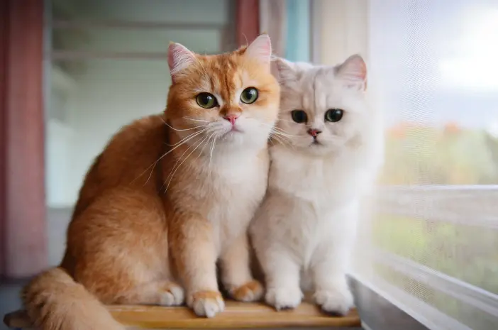
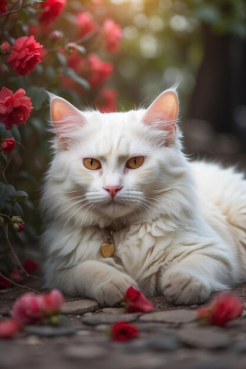
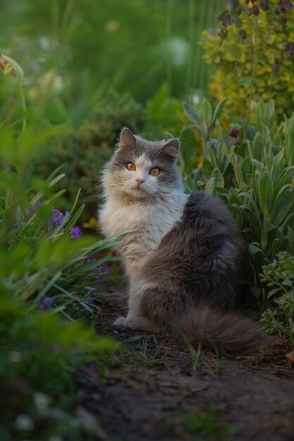

Menjaga kucing juga berarti mengemban tanggung jawab untuk memberikan perawatan yang baik, termasuk makanan, perawatan medis, dan perhatian yang diperlukan. Untuk itu, kami menyediakan layanan perawatan kucing.

Get your meow furry friends!
Bersama kami, mari rawat hewan peliharaan kesayanganmu dengan penuh kasih sayang.
Kami menyediakan semua kebutuhan untuk hewan peliharaan kesayanganmu dan menjadikan mereka sehat dan bahagia.
Prodak Unggulan Kami
Prodak
Berikut adalah produk-produk terlaris dari toko kami!

British short hair
Kucing British Shorthair adalah salah satu ras kucing peliharaan dengan bentuk tubuh yang khas dan wajah yang lebar. Salah satu ciri khas kucing British Shorthair adalah bulunya yang berwarna abu-abu kebiruan dan matanya yang berwarna orange. Kucing British Shorthair juga dapat dibedakan berdasarkan berbagai warna dan corak bulunya.

Birman
Untuk kucing yang mencolok dan tidak biasa, sulit untuk tidak jatuh cinta pada kucing Birma, atau 'The Holy Cat of Burma' seperti yang dikenal di negara asalnya. Kucing ini memiliki sikap yang tenang dan memiliki bulu berwarna pucat, wajah, telinga, ekor, dan kaki yang gelap dengan sarung tangan putih di sekitar cakarnya. Matanya yang sangat cantik berwarna biru safir tua.

Norwegian Forest cat
Seperti namanya yang megah, kucing Hutan Norwegia benar-benar kucing yang penuh pesona dalam setiap aspeknya. Mereka adalah pemburu ulung, sangat ramah, dan mudah berteman dengan hewan peliharaan lain.

Produk Perawatan Terbaik Kami
Kami juga memiliki banyak produk perawatan untuk sahabat peliharaan terbaik Anda
Anda dapat memeriksanya di Toko Online kami di TOKOPEDIA